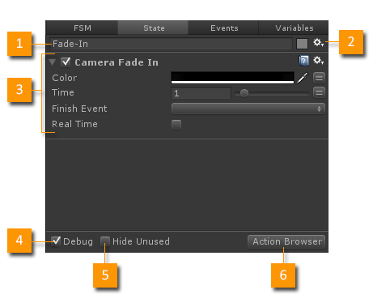
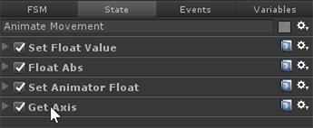
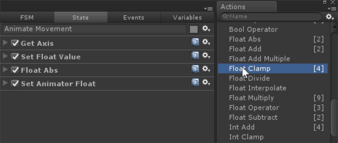
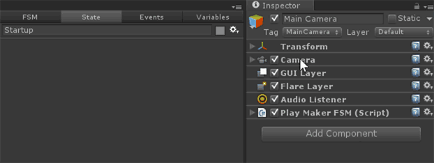
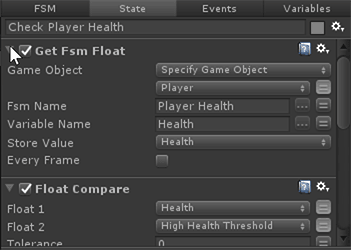
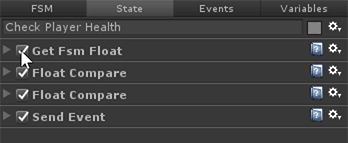

The State Inspector lets you edit the properties of the selected state. Most importantly it lets you edit the Actions on a state.

- State Name: The name of the selected state. NOTE: State names must be unique in an FSM.
- Settings Menu: Color Swatch and State Inspector settings menu. See below.
- Action: Each state has a list of actions. Each action has it's own Action Editor.
- Debug: Shows the value of any variables used in Actions. Useful for debugging variables at runtime.
- Hide Unused: Hide unused, optional parameters. This can reduce clutter in the action UI.
- Action Browser: Open the Action Browser so you can add actions to the state.
Settings Menu
- Action Sequence: When checked, each action is run until finished before the next one starts.
- Show State Description: Use state descriptions to describe how your FSM works.
- Show Action Parameters: Show/hide the action parameters.
- Dim Unused Parameters: Dim unused, optional parameters. Can help reduce visual clutter.
- Set State Color: Set a custom color for the state in the Graph View. See Color Preferences.
- Select All Actions: Select all the actions on the selected State.
- Copy Selected Actions/Paste Actions: Copy/Paste actions.
- Delete All Actions: A quick way to remove all actions on the State.
- Action Browser: Opens the Action Browser.
- Online Help: Opens this document!
Drag and Drop
- Actions can be re-ordered by dragging their title bars.

- Actions can be dragged from the Action Browser into the State Inspector.

- Components can be dragged from the Unity Inspector onto the State Inspector.

Update Loop
- All actions are updated every frame from top to bottom.
- Finished actions are skipped in the update loop.
- When all actions on a state have finished a FINISHED event is sent.
- When the game is playing, active actions have a green highlight; finished actions are dimmed.
- The Action Sequence setting lets you run each action in turn instead of simultaneously.
See Actions for more details on the update loop.
Workflow Hints
- Use the Debug check box to show variable values while playing the game.
Shortcuts
- After selecting a State in the Graph View, hit Tab to highlight the State Name edit field.
- Press ~ or Ctrl~ to open the Action Browser.
- Double click any empty space in the State Inspector to open the Action Browser.
- Ctrl click an action foldout to open/close all actions.

- Ctrl click the enable check box to enable/disable all actions.

See Also: